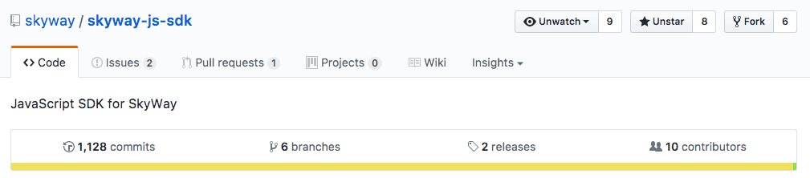

はじめまして
- Yuji Sugiura
- フロントエンド・エンジニア at PixelGrid Inc.
- Twitter: @leader22
- ブログ: console.lealog();

https://github.com/skyway/skyway-js-sdk/graphs/contributors

※訳: （お忙しい本当の）中の（人に代わってがっつりコードを書く業を請けてる）人です

npmからは利用できません/src
├── peer.js
├── peer
│ ├── connection.js
│ ├── dataConnection.js
│ ├── mediaConnection.js
│ ├── room.js
│ ├── meshRoom.js
│ ├── sfuRoom.js
│ ├── negotiator.js
│ └── socket.js
└── shared
├── config.js
├── logger.js
├── sdpUtil.js
└── util.js
2017/09/29時点です。
コードは全部4000行ほど。あれだけのことをやってるなら妥当な量・・？
Peerと、各Connection、各Roomさえ把握すればOK！
const peer = new Peer({ key: 'xxxx' }); // Peer
// 1:1なら
const mediaConn = peer.call(peerId); // MediaConnection
const dataConn = peer.connect(peerId); // DataConnection
// N:Nなら
const meshRoom = peer.joinRoom(roomName); // MeshRoom
const sfuRoom = peer.joinRoom(roomName, { mode: 'sfu' }); // SFURoom
WatchしてるだけでWebRTC界隈全体の動きもわかるかも？
神・・ 🙏
時間もないので気になる方は後で個別にどうぞ😇